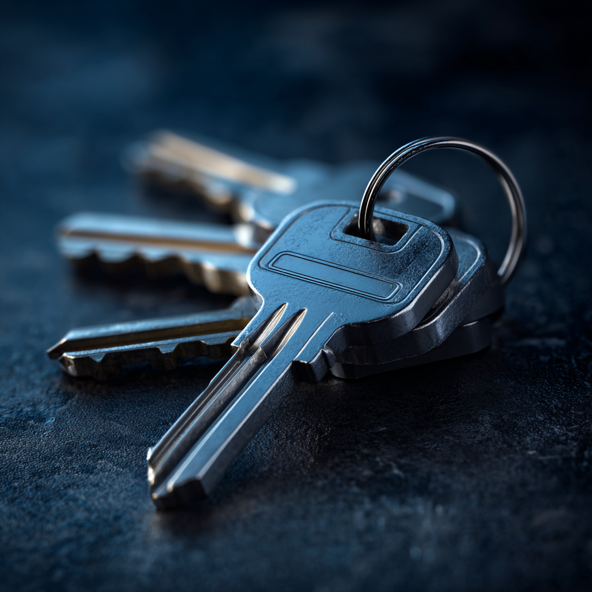

Our Services
Professional locksmith services for homes, businesses, and vehicles throughout the San Fernando Valley.

Emergency Lockout
Locked out of your home, car, or business? We respond fast — most Reseda jobs within 20–30 minutes. Available 24 hours a day, 7 days a week including holidays. No hidden fees, price quoted before work begins.
Lock Rekey & Replace
Moving into a new home or had a change in tenants? Rekeying your locks is faster and more affordable than full replacement and renders old keys useless. We work with all major lock brands including Schlage, Kwikset, and Medeco.
Commercial & Residential
From single-family homes to multi-unit buildings and storefronts, we handle deadbolts, knob locks, lever sets, and high-security systems. Ask about master key systems for property managers.
Car Key & Ignition
Lost your car keys or broken one in the ignition? We cut and program replacement keys for most makes and models on the spot. Typically faster and less expensive than the dealership.
Safe Opening & Installation
Forgotten your combination or inherited a safe you can't open? We open most residential and commercial safes without damage. We also install new safes and advise on the right model for your needs.